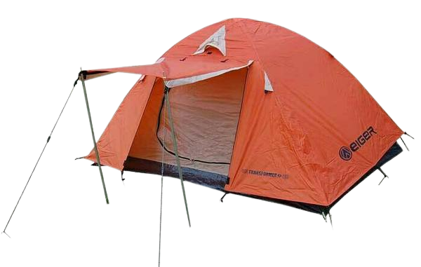
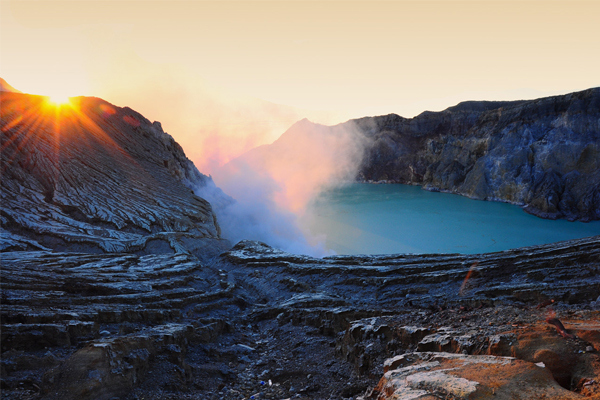

Media Bergabung
Dipesan.Bergabung.Mendaki
Pendakian untuk sekitar pulau jawa Penawaran besar mendaki adalah dengan harga normal Rp, 450.000,00 Sudah termasuk mobil, makan dll ditanggung sendiri. Untuk harga opentrip besar penawaran nya dengan harga Rp, 800.000,00 Sudah termasuk semuanya mulai dari makan , tenda , dll ditanggung open trip, termasuk membawakan carrier jika kita kelelahan.

.png)
Carrier
Dalam dunia mendaki fungsi dan manfaat gunung itu sangat vital karena tanpa tas gunung kita tidak bisa membawa peralatan pendakian yang kita punya, Selain itu juga kita harus juga bisa memilih tas gunung yang tepat untuk kita agar nanti saat kita mendaki gunung merasa aman dan nyaman.
Tenda Gunung
Tenda yang bagus itu menggunakan bahan Nylon , bahan ini sangat bagus untuk berkemah diarea pegunugan. Untuk kenyamanan dalam ruang sebuah tenda ideal memiliki minimal 60cm-1m dan lebar nya 2M agar ruang dalam tenda mendapatka suply udara yang bagus.
Sleeping Bag
Secara garis besar sleeping bag bermanfaat untuk menjaga suhu saat tidur agar normal tidak keluar masuk angin saat dialam yang terbuka seperti digunung ini , sangat sekali disarankan untuk membawa sleeping bag ketika mendaki
Trekking pole
Trekking pole adalah alat untuk membantu saat mendaki, trekking pole sangat membantu dalam aktivitas pendakian,trekking pole bisa lebih mudah menjaga keseimbangan tubuh di jalur pendakian yang terkenal curam.


gunung api stratovolcano[2] yang terletak di Kabupaten Garut, Jawa Barat, tepatnya di Kecamatan Cisurupan. Gunung dengan ketinggian 2.665m di atas permukaan laut ini terletak sekitar 70 km sebelah tenggara Kota Bandung.
Gunung Andong merupakan destinasi pendakian yang letaknya berada di antara Desa Ngablak dan Desa Tlogorejo, Grabag, Kabupaten Magelang, Provinsi Jawa Tengah.